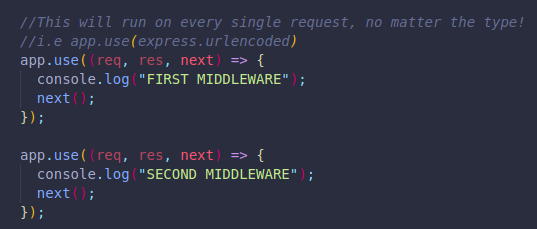
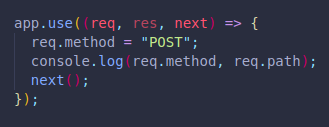
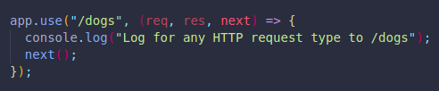
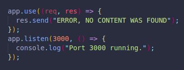
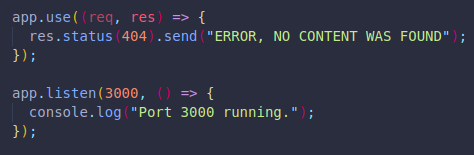
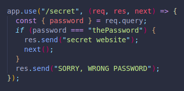

They are functions that run during the request and response.
They have access to the req and res objects.
It can end the HTTP request by sending back a response, i.e res.send()
OR it can be chained together, one after another by using next()
It can execute code, make changes to req and res too.
It helps us log HTTP requests into our terminal.
We can install it with npm i morgan.
It will log the type of request, the path and the ms it takes to send the response!
We just have to save it to a variable. (require it) and execute it with app.use().
It can be customized further. Using dev instead of tiny will colorize the HTTP code. common will include the date, etc.
We can write our own middleware to use on our apps.
By including a third argument in our functions, which we can call next, we are telling our code to move on to the NEXT middleware, the only other thing we need to do is execute next by including next() inside our function.
If we don't call next, the line ends where the last middleware that DOES call next is.
Any code we include after calling next will still run, eventually after finishing the order of next calls. It may be important to pay attention to order.
(res.send() will stop any chain)
This will console log the request type and the path the user requested. Close to what Morgan does. It will also apply POST to any request, even if it is a browser GET request since we are applying it to all incoming requests.
It is important to position our middleware correctly, as they may not run if another response is matched and sent before it reaches our code.
Any res.send() will stop any code below it from executing!!!
We know any code inside an app.use() will run on every single incoming request.
We can use this to our advantage:
This console log will run if we make a GET/POST/PUT/PATCH etc. request, but only if the request is for /dogs!.
If we had many routes that start the same way, we may want a particular middleware for all of them.
We can even run the middleware IF it includes dogs anywhere on the request if needed.
We can include an app.use() at the end of our code, it will only run if none of our paths are matched.
There's no need for next here, since it is at the end.
It will return a 200 code, since technically a path was matched, which is our middleware.
We can simply add res.status(404) before our .send() to change the default 200 code:
If we wanted to add a level of security to all of our paths, we could ass some code:
If we wanted to only apply to a specific path, we could include it in a string before the function arguments:
OR we could save the code to a function, and include it in between the path and the function arguments!
We must make sure to include the next argument and function execution in order to have our response sent.